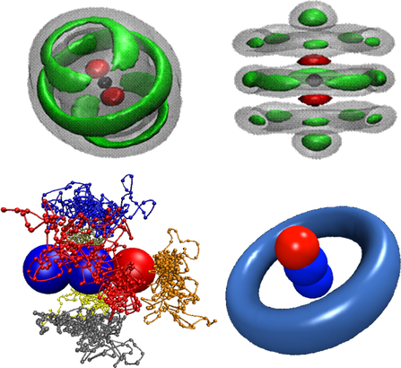
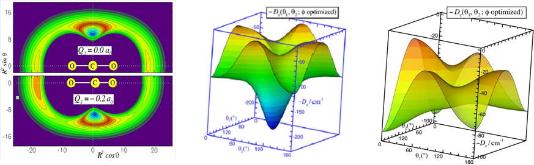

李辉教授研究组 光谱和动力学的理论研究
研究方向简介
李辉教授课题组近期的研究主要集中在以下几个方面：
- 发展多原子分子或弱相互作用体系分子间的势能面；
- 发展全量子力学计算方法，精确计算分子或团簇中的红外和微波光谱；
- 发展路径积分蒙特卡洛(PIMC)和路径积分分子动力学(PIMD)方法；
- 发展一维、二维超快红外光谱计算新方法；
- 模拟量子溶剂在纳米尺度的光谱、动力学过程和微观超流；
- 模拟大气气溶胶中的红外光谱。
量子溶剂在纳米尺度的超流
氦-4和氦-3是目前为止唯一直接确认具有超流性质的物质。因此，相当大的兴趣在于发现新的超流物质。因为仲氢跟氦-4类似，是无自旋不可区分的波色体系，因此，仲氢是下一个最有可能具有超流性质的热门物质之一。但由于三相点温度过高（13.8K)，进一步降温即成固体氢。所以现有的实验还局限于把氢分子簇稀释在氦滴中来研究超流。最近，理论与实验合作，我们首次成功的发现仲氢在纳米尺度的超流行为。这是除氦原子外，发现的第二个具有超流性质的物质。该项研究工作发表在美国《物理评论快报》（Phys.Rev.Lett. ,105,133401(2010))，该工作发表后立即引起了广泛的关注，被选为编辑的建议（Selected as an Editors' Suggestion)，且作为特征文章被《物理》（physics）和《新科学家》（the New Scientist 09 october 2010 No.2781,p13）进行评述。
气溶胶中的光谱和动力学
二次有机气溶胶通过凝聚大气中挥发性有机化合物的氧化产物而形成。二次有机气溶胶作为气溶胶的重要组成部分，对气候改变、环境污染、人类健康有很大影响，备受研究关注。二次有机气溶胶的光谱表征是实验研究其成分、结构、大小形状等内部性质的重要手段。而由于其内在的复杂性，给实验科学家的光谱指认造成了巨大的困难．由于有机气溶胶中常含有大量氢键，凝聚中容易形成氢键网络，具有不可忽视的量子效应。本项目立足大气化学热点，以含氢键二次有机气溶胶为研究对象，拟发展量子路径积分分子动力学方法（PIMD），应用自己发展的振动激发的分子内一分子间相关势和力场，模拟二次有机气溶胶的内部结构和氢键动力学，考察温度相关的效应。结合一次微扰理论和中心分子动力学方法(CMD)，精确模拟有机气溶胶的红外光谱，帮助实验化学家进行光谱指认，为进一步解析遥感光谱信息提供基础数据。

量子蒙特卡洛（Quantum Monte-Carlo）方法的发展和应用
为了加深人们对量子溶剂、微观超流的认识，以探索新的超流物质，目前将生色分子嵌套在量子溶剂中，光谱分析分子的转动振动光谱，给实验研究超流将供了一个特有的研究途径。同时也激起了理论科学家们的研究兴趣。但理论科学家们面临着几个理论难题： 1. 因为超流是一种极限的物理现象，它是温度接近0K的量子溶刘，低温、轻质量的溶液环境，量子效应非常明显，而目前全量子求解这样的多原于体系只限于两到三个原于跟分子形成的簇. 2. 由于超流是无自旋不可区分的波色体系，量子交换效应尤为重要。 3. 相对于气相中的红外和微波光语，生色分子的红外振动频率位移非常小（通常小于1个波数），这不仅需要包含直接相关的振动坐标，还需要考虑跟直接振动模耦合较强的相关坐标. 4. 需要高精度的分子间势能面。随看溶剂分子簇数目的增加，溶剂分子占据的位置不再局限于全局极小值附近，过渡态、局部极小区城也开始有分布。当它在生色分于周围占据的位置不再局限于第一个溶剂层，开始向第二、第三溶剂层扩展时，分子间长程势起着至关重要的作用. 5. 随着溶剂分子簇的增长，由于计算时间和计算机硬件的局限，难以达到纳米滴和微米尺度的实验要求。
针对溶剂分子嵌套在分子簇中的量子效应和多体问题，发展新的量子蒙特卡洛（QMC）方法模拟生色分子嵌套在弱相互作用体系中的超流行为显得尤为必要。最近，我们发展了一种精确的且计算成本不高的“势能不同”的PIMC法（J. Chem. Phys., 130,144305(2009)），准确的预测了生色分子嵌套在弱相互作用氦和氢分子簇中的振动颇率位移量，帮助了实验化学家们进行了更多、更大体系的光谱指认，为进一步实验和理论探索、确认新的超流氢物质奠定了基础。

发展弱相互作用体系分子间的势能面及精确计算体系的红外和微波光谱
发展高精度的势能面，是准确模拟生色分子在溶剂分子簇中光谱和动力学的关键。由于目前的从头算方法还不能直接准确的计算分子间的长程相互作用，因此应用高水平的从头算方法获取分子间的短程势，结合实验或理论的长程系数，是目前构建分子间势能面的常用方法。让分子间的短程和长程力有效的结合，自然的连接，过渡和递推，灵活的应用等．是选择势能模型来表征的关健。以对广泛采用的主要是ESMMSV（Exponential-Spline-Morse-Morse-Spline-van der Waals）或者HFD（Hartree-Fock-Dispersion）等模型。它们大都采用分段表示，或者直接附加的方法，缺乏平滑的过渡，不能在超出数据区域进行有效的递推。由于模型中的参数不具有明确的物理意义，不能较准确有效的进行多维展开。目前新发展的如Morse/Long-Range（MLR）势能模型不但能准确的表征原子间的短程势能相互作用，而且能有效的包含原子间的长程势，自然的连接两者之间的过渡区域，而不是以前模型的直接附加。但现有的MLR势能模型只应用于一维的双原子分子体系。因此，我们进一步推广了MLR理论，发展了多维MLR势能模型，并成功的应用于线性分子和原子，以及线性分于和线性分子体系（Phys. Chem. Chem. Phys.,10,4128(2008) ; J. Chem. Phys.,132,214309(2010)）。未来，我们将包含更多的角度和径向相关变量使其以后能广泛应用于非线性分子的弱相互作用体系和化学键分子体系。
振动平均的约化维数的处理方法
为进一步模拟更大的原子、分子簇体系，使其探索多体量子效应成为可能。近来，我们提出了一种有“有障碍转子”(hindered-rotor）振动平均方法（J. Chem. Phys.,133,104305(2010)），能有效的约化势能面的维数。我们以氢分子为例，严格的检测了氢分子的转动约化处理方法，并应用于CO2-(pH2)2（J. Phys. Chem. A,115, 7327 (2011)），发现仲氢的转动并不能用传统的球谐平均（spherica1 average）方法来处理，采用，“有障碍转子”（hindered-rotor）振动平均方法约化处理仲氢分子的转动更为精确可靠。
最新进展
发展Two-Worms-PIMC方法：模拟混合玻色体系中的相分离
超流是一种极限的宏观物理现象，在温度接近0K时，液态氦-4和氦-3转变为没有摩擦，无粘性，熵为零，无限导热的量子流体。仲氢与氦-4类似，是无自旋不可区分的玻色体系，是最有可能具有超流性质的候选物质之一。2010年，结合理论和实验观测，我们发侧中氢在纳米尺度的微观超流（Phys. Rev. Lett. 105,133401(2010)）。迄今为止，氦-4与仲氢是被确定的两种超流物质，当这两种物质混合在一起时，总的超流是增强还是减弱？各自的超流分数是多少？自然的成为当前该领域研究中又一热点讨论主题。最近，我们发展了基于双蠕虫算符的路径积分蒙特卡洛方法，并成功的应用于量子混合溶剂的研究，我们将CO2分子作为探测器置于氦-4和仲氢的量子混合溶剂中，在不同尺寸、不同组分的混合团簇中，我们发现在特定团簇中相分离现象，相分离的位置与实验观测到奇异现象的位置完全吻合（Science 289,1532(2000))当时他们把这种现象错误的归咎为仲氢超流的表现。
发展一维、二维超快红外光谱计算新方法：研究酸离解动力学
随着超快激光光谱和分子束技术的发展，光谱解析酸离解引起的溶剂化过程正逐渐成为可能。尽管红外光谱研究(HCN)m-(H2O)n簇获得了大量光谱信息但在光谱指认和微观解释内在的动力学方面仍然面临诸多困难。1）如何构建含氢键体系的分子内一分子间势能或力场；2）如何有效的包含振动模的量子效应；3）如何准确的包含非谐振动运动和振动模式之间的耦合；4）以及有效分离特定振动模的跃迁频率等成为解决该类问题的关键。该研究拟发展一种红外光谱计算新方法：结合分子动力学取样和从头算势能计算，应用微扰理论，采用势能优化离散变分法快速计算局部模振动频率，榭以溶质分子在水溶剂环境中的红外光谱，并将其应用于研究(HCN)m-(H2O)n簇体系中，考察随着n的变化，光谱位移和线形变化规律，揭示簇堆积中的酸离解的起始位置，考察最小酸的结构、稳定性及形成的原因。初步的模拟结果如图所示，我们发展的新方法大大改进了这种传统方法的不足。
高维弱相互作用体系势能拟合和振转光谱的计算程序
我们以CH3F-He体系为例开发了高维弱相互作用体系势能拟合和振转光谱计算程序，该计算程序包主要包括两大部分：势能拟合部分和振转光谱计算部分。在势能拟合部分我们运用Morse/Long-Range(MLR）势能函数形成体系势能的分析表达式。在振转光谱计算部分我们运用的是离散变量表象（DVR）方法和Lanczos递推迭代的算法来生成矩阵元和对角化该矩阵计算体系光谱．该部分工作的主要创新点在于： 1. MLR函数首次被用到点状分子与非线性分子相互作用体系。 2. 我们的高维势能面包含了探针分子的振动，使该程序不仅可以计算体系的微波转动光谱还可以计算红外振动光谱。 3. 以前的bound程序只能计算能级不能得到波函数．我们的计算程序不仅可以得到波函数还可以用其计算光谱的跃迁强度。 4. 我们的程序包是普适性的。类似的弱相互作用体系势能面和光谱都可以运用该程序包计算。